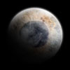

|
Bonus Section! |
|
Step 21: Adding to Your Scene |
|
If you have completed all of your work and find yourself with some free time,
this step will give you some ideas for adding to and improving your space
scene.
Have a look at each section below and decide what you would like to add. Keep in
mind that any additional work you do will earn you extra credit and make your
space scene stand out when we vote on the best one - you may get a poster of
your space scene to take home!
Here are a few things to keep in mind if you choose to complete any of the
items that follow:
- Save your new file as STEP21 - do not save these changes to your Space,
step20, or Final file
- If you want your work to be included in the voting, you must complete your
scene BEFORE the deadline
- Don't try to do everything on this page - your scene will be WAY
too crowded and will just look bad
- Completing any of the work in this step will get you extra credit,
and each section is worth a different amount of credit - as you move down the
page the sections are worth more and more extra credit (exactly how much extra credit you
get depends on how well you do the work)
- All images below are just examples - find and use your own pictures!!!!!
2D MOON
Repeat Step 13, but instead of using one of the satellite photos, find and
use a picture of the moon...
Keep the following in mind:
- Place the moon in orbit around one of your planets - it should not be
floating in space by itself
- The moon should be much smaller than the planet it orbits
- Shade and highlight the moon so that it looks natural (shade and highlight
must match the parent planet's shade and highlight)
- Do not place the moon on the dark side of the planet - it would be in
shadow and you wouldn't be able to see it
- Get more extra credit by placing the moon between the planet and the sun
and have the moon cast a shadow on the planet
ADDITIONAL PLANETS
Repeat Step 13, but instead of using one of the
satellite photos, use a unique image such as one of the following:
- Extremely close-up pictures of everyday objects such as...
|
|
|
|
|
|
 |
| |
Yarn |
Marbles |
Water |
Sunflower |
Duh... |
|
Or how about
animals... |
|
|
|
|
|
|
|
| |
Zebra neck |
Bat skin |
Eagle wing |
Elephant head |
Goldfish body |
|
Or things with cool patterns already in them like
rocks or wood... |
|
|
|

|
|
|

|
| |
Pine |
Marble |
Geode |
Oak bark |
Granite |
|
Or what about
food... |
|
|
|
|
|
|
|
| |
Strawberry |
Waffle |
Fried stuff |
Cabbage |
Hamburger |
Or anything else you would like to use, just as long as you can't tell
what the object is. For example, take a look at the following image of a
Lamborghini Murcielago...
If we use this to create our planet, this is what we get...
Obviously, there are no planets that look like this (though how awesome
would it be if there were), so avoid doing this as it will actually hurt your
grade instead of help it. |
- A pattern created in Photopea, such as the one I created below...
|
|
|
|
|
|
|
|
|
Fill with color |
Stain glass filter |
Draw shading |
Motion blur |
Spray strokes |
Sharpen |
Gradient map |
|
It took several steps, and I actually just played around
and selected stuff at random, but I ended up with a pretty cool pattern that
makes an awesome planet...
|
- A drawing you create freestyle in Photopea - let your imagination go
free and just draw whatever you like...
Then turn it into a planet...
Keep the following in mind:
- You can use pretty much anything you can think of as the basis of your
planet, but you must FIND YOUR OWN IMAGES - DO NOT use
my example images
- You do NOT have to go through all of the planet steps to create
additional planets - simply duplicate the Planet1 layer group and replace the
Planet layer with the new planet image and apply the Emboss to this new
layer and then replace the old Emboss layer with the new one; you can keep
the same clouds (if you want the clouds to look different as
well, you can always select the cloud layers and rotate them so that
different areas are visible), or you can simply make the cloud layers
invisible (the eagle wing planet above has both cloud layers turned off,
while others have just one turned on)
YOUR HOME PLANET
This involves putting an image of the ground at the bottom of your space
scene so that it looks like you are standing on the planet looking up at the
sky...
Keep the following in mind:
- It doesn't really matter what kind of ground you use, just be sure that it
is in proportion to your scene - in other words, it should look natural
- It is best to avoid images with anything manmade (like buildings or
statues or stuff) in them - it is difficult
to find images like this that look realistic when you insert them into your
scene
- You can use Edit > Transform > Warp to give your horizon a slight curve to it
so that it looks like the surface of a planet - be careful though that the
image you use was taken from far away or it will not look natural
- If you don't want to cover up the bottom of your space scene, you can add
room to the bottom by doing the following:
- Click Image and then click
Canvas Size...
- In the
Canvas Size window, change the Height setting (red arrow in the image
below) to whatever size you need - my example adds 100 pixels, but use
whatever size you need to be able to add in the ground image you wish to use
-
Click the upward pointing Anchor arrow (blue arrow below)...
to set the Anchor option to this...
Which lets Photopea know that you wish to add the additional pixels to the
bottom of the image - Click OK - you should see the additional area at
the bottom of your image
- When you insert your ground, make sure it
is tall enough to fill the area you added
SPACE SHUTTLE
Find a picture of the space shuttle on the Internet and place it in orbit around
one of your planets...
Keep the following in mind:
- Be sure it is large enough to be seen but not so large that it doesn't
look natural
- Remove everything else in the original shuttle image but the shuttle
- Avoid nose-on pictures (pictures taken from directly in front of the
shuttle) as they are too small and too difficult to tell what is in the image
when you
get it in orbit around the planet
SATELLITES
Find a picture of a satellite on the Internet and place it in orbit around one
of your planets...
Keep the following in mind:
- Be sure the satellite is large enough to be seen but not so large that it
looks unnatural - large satellites such as the Hubble Space Telescope can
be left fairly large, but any other satellite should be made small
- Delete everything else in the original satellite image but the satellite
- Feel free to add in more than one satellite, but don't go crazy
ALIEN INVADERS
This one has your solar system being invaded. Go online and find images
showing spaceships and place them in your scene...
Keep the following in mind:
- You can have multiple ships - even multiple versions of the same ship -
but if you do, make them different sizes so that they appear to be different
distances from your planets
- If you have time, you can add in two sets of ships and have them fight
(you can make the laser blasts between the ships very easily using the Neon
Glow filter - the quickest way to find out how to do this is to search the Internet
for tutorials on creating a lightsaber)
- You don't have to have a bunch of aliens, if you want just one alien ship
in orbit around your planet that is fine
DISTANT GALAXIES
There are 6 different types of galaxies...
Each can give your space scene a little extra flair, but it is difficult
to make them look realistic. To help you out, I have put together a separate
tutorial that covers in depth how to create 3 different spiral galaxies and
gives you pointers on how to create the other 5 types.
Head over to the Adding a Galaxy to Your Space
Scene tutorial to find out how add a galaxy to your space scene
(hence the name).
Here is what a spiral galaxy looks like in the space scene...
Keep the following in mind:
- The one I created above had a soft color tint added to it, you can do this
as well or leave yours white - both look great in the space scene
- Since these are supposed to be distant objects, keep them small
- Do not place your galaxy in a prominent position in your scene - it is
supposed to be an additional item so place it in an out of the way spot
- You can add in more than one galaxy, but do not reuse the same galaxy over
and over - it will not look natural; it is most effective if your multiple
galaxies are of different types
ASTEROID BELT
You could create tons of asteroids the same way you did in
Step 16 and shrink
them down so that you have a nice asteroid belt...
but a better way is to take one of the asteroids from Step 16 and use it to
create a custom brush. We don't have time in this lesson to cover how to do
this, so if you are interested in this you will need to find instructions for
doing this online - there are tons of places that will show you how.
Keep the following in mind:
- Keep the size of the asteroids small - if you make them too large they
will not look natural
- Do not place your asteroid belt in a prominent position in your scene - it is
supposed to be an additional item so place it in an out of the way spot
- Remember the pull of the sun, so if you want an asteroid belt around the
sun make sure to make it curve
3D Moon
This one involves using Photopea's 3D tools and can be a little
complicated, so don't start it unless you have time to finish it. The 3D
moon is different from the 2D moon above in that the 3D moon is actually
a 3D object and can be rotated and manipulated in 3D space, unlike all of the
other images we have created up to this point.
To complete this, you will need the moon map located
here: Moon planetary map. Simply click
the link to open the moon map in the browser, then right-click on
the moon map and save it to your Photopea folder and then read and follow the
directions linked below.
The directions to create the 3D moon are located here:
3D Moon.
Keep the following in mind:
- Resize your moon to keep it in proportion with the planet that it orbits
- Make sure your moon's shadow matches the shadow of the planet that it
orbits
- Do not place the moon on the dark side of the planet - it would be in
shadow and you wouldn't be able to see it
- Get more extra credit by placing the moon between the planet and the sun
and have the moon cast a shadow on the planet
PLANETS IN MOTION
This one is complicated, so if you choose to do it be sure you have
enough time to complete it. For this you will need to take your planets and
animate them so that they orbit your star (yes, it is possible for your planet
to move around the star even while the star is in the corner of your scene). You
can make your planets move the same way you made your spaceship fly across the
screen.
Keep the following in mind:
- Make sure things don't crash into each other
- Planets orbit in an ellipse and move in a straight line - in other words,
they don't wiggle up and down like a snake; they move in nice, smooth arcs
- Get even more extra credit by having your planet spin as it orbits
- The more things you have moving at once the more extra credit you get
Remember, save any work you do on this step as STEP21 - do not save
your work to your Space, step20, or Final file.
01 |
02 |
03 |
04 |
05 |
06 |
07 |
08 |
09 |
10 |
11 |
12 |
13 |
14 |
15 |
16 |
17 |
18 |
19 |
20
{kind=link}